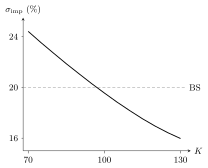

7 Volatility modelling
The Black–Scholes model assumes constant volatility and Gaussian log-returns, but market option prices imply a volatility surface that is far from flat, and returns are skewed and fat-tailed. This chapter introduces the two main families of models that address these shortcomings. Local volatility models make volatility a deterministic function of time and price, and can reproduce all quoted option prices exactly (Dupire’s formula). Stochastic volatility models add a second random factor, giving realistic volatility dynamics at the cost of market incompleteness; Heston’s model is the reference example. Local-stochastic volatility models combine the two, and volatility derivatives trade volatility itself.
7.1 Reading the smile
Before modelling the smile it helps to understand what it encodes (Hull, Chapter 20).
Calls and puts share the same implied volatility. Put–call parity \(C - P = S_0 - Ke^{-rT}\) holds for market prices (by no arbitrage) and for Black–Scholes prices (as a model identity). Subtracting, \(C_{\mathrm{mkt}} - C_{BS} = P_{\mathrm{mkt}} - P_{BS}\) for any volatility: the volatility that matches the call also matches the put. The smile is therefore a property of the strike and maturity, not of the option type.
Smiles are statements about the risk-neutral distribution. By Breeden–Litzenberger (below), call prices across strikes determine \(f^Q(T, \cdot)\). Compared with the log-normal:
- equity indices show a downward-sloping skew: the left tail is heavier and the right tail lighter (crash risk, “crashophobia” after 1987, and the leverage effect: volatility rises when prices fall);
- currencies show a more symmetric smile: both tails heavier than log-normal;
- jumps in the underlying create a pronounced smile at short maturities that flattens with maturity, whereas stochastic volatility creates smiles that build up over longer horizons;
- the term structure of at-the-money volatility tends to be upward-sloping when volatility is historically low, and downward-sloping when it is high (mean reversion of volatility).
Smile dynamics. How the smile moves when the spot moves matters for hedging. Under sticky strike the implied volatility of a given strike is unchanged; under sticky delta (or sticky moneyness) the smile moves with the spot. Local volatility models imply smile dynamics that contradict both in the wrong direction; stochastic volatility models give more realistic behaviour.
7.2 Local volatility
Under the risk-neutral probability \(Q\), postulate \[dS_t = rS_t\,dt + \sigma(t, S_t)\,S_t\,dW^Q_t, \qquad S_0 = s,\] with a local volatility function \(\sigma : [0, T]\times\mathbb R_+ \to \mathbb R_+\). Volatility now varies with time and price, but no new source of randomness is introduced: the market is still complete, and the hedging argument of Chapter 5 goes through unchanged.
The pricing function \(F\) of a European payoff \(G(S_T)\) solves \[F_t + rxF_x + \frac12\sigma(t, x)^2x^2F_{xx} - rF = 0, \qquad F(T, x) = G(x),\] which in general must be solved numerically.
How should \(\sigma(t, x)\) be chosen? So that the model reproduces the call prices observed on the market for all strikes and maturities. The answer rests on a link between call prices and the risk-neutral distribution.
7.2.1 Breeden–Litzenberger
Recall the Dirac delta \(\delta\), a generalised function used under integrals: \(\int f(x)\delta(x - a)\,dx = f(a)\). Intuitively \(\delta(x - a)\) is the derivative of \(\mathbf 1_{[a, \infty)}(x)\).
Let \(C(T, K)\) be the time-0 price of a call with maturity \(T\) and strike \(K\), and \(f^Q(T, \cdot)\) the risk-neutral density of \(S_T\). Then \[\frac{\partial C}{\partial K}(T, K) = -e^{-rT}Q(S_T > K), \qquad \frac{\partial^2C}{\partial K^2}(T, K) = e^{-rT}f^Q(T, K) = e^{-rT}\mathbb E^Q[\delta(S_T - K)].\]
Proof. Writing \((x - K)^+ = \int_K^x dy\) for \(x > K\) and exchanging the order of integration, \[C(T, K) = e^{-rT}\int_K^\infty(x - K)f^Q(T, x)\,dx = e^{-rT}\int_K^\infty\Bigl(\int_y^\infty f^Q(T, x)\,dx\Bigr)dy .\] Differentiating in \(K\) gives \(-e^{-rT}\int_K^\infty f^Q(T, x)\,dx = -e^{-rT}Q(S_T > K)\), and again \(e^{-rT}f^Q(T, K)\). Finally \(f^Q(T, K) = \int f^Q(T, x)\delta(x - K)\,dx = \mathbb E^Q[\delta(S_T - K)]\). \(\square\)
Message: the risk-neutral distribution of \(S_T\) is encoded in call prices for all strikes at maturity \(T\) — equivalently, in the implied volatility smile at \(T\). Can we find \(\sigma(t, x)\) such that the model generates exactly these distributions? Yes.
7.2.2 Dupire’s formula
If call prices \(C(T, K)\) are known for all \(T, K > 0\), the local volatility function that reproduces them is uniquely given by \[\sigma^2(T, K) = \frac{\dfrac{\partial C}{\partial T}(T, K) + rK\dfrac{\partial C}{\partial K}(T, K)}{\dfrac12K^2\dfrac{\partial^2C}{\partial K^2}(T, K)} .\]
(This does not say that the local volatility model is the only model reproducing all call prices: stochastic volatility models can do so too.)
Proof. We would like to apply Itô’s formula to \((S_t - K)^+\), which is not \(C^2\). For convex functions there is the Itô–Tanaka–Meyer formula: if \(dX_t = \alpha\,dt + \beta\,dW_t\) and \(F\) is convex, \[dF(X_t) = F'(X_t)\alpha\,dt + \frac12\int_{-\infty}^{\infty}dL^x_t\,F''(dx) + F'(X_t)\beta\,dW_t,\] where \(F''(dx)\) is the second derivative in the sense of distributions and \(L^x_t\) is the local time of \(X\) at level \(x\) — roughly, the time \(X\) spends near \(x\) up to \(t\) — characterised by the occupation-time formula \(\int g(x)L^x_t\,dx = \int_0^tg(X_s)\beta^2(s, X_s)\,ds\).
For \(F(x) = (x - K)^+\), \(F'(x) = \mathbf 1_{(K, \infty)}(x)\) and \(F''(dx) = \delta(x - K)\,dx\), so \(\int dL^x_t\,\delta(x - K) = \delta(S_t - K)S_t^2\sigma^2(t, S_t)\,dt\) and \[d(S_t - K)^+ = \mathbf 1_{\{S_t > K\}}rS_t\,dt + \frac12\delta(S_t - K)S_t^2\sigma^2(t, S_t)\,dt + \mathbf 1_{\{S_t > K\}}\sigma(t, S_t)S_t\,dW^Q_t .\] Discounting, \(d\bigl(e^{-rt}(S_t - K)^+\bigr) = e^{-rt}\bigl[rK\mathbf 1_{\{S_t > K\}} + \frac12\delta(S_t - K)S_t^2\sigma^2(t, S_t)\bigr]dt + (\text{martingale})\), since \(-r(S_t - K)^+ + r S_t\mathbf 1_{\{S_t > K\}} = rK\mathbf 1_{\{S_t > K\}}\). Integrating over \([0, T]\) and taking \(Q\)-expectations (the stochastic integral has zero mean), with Breeden–Litzenberger, \[C(T, K) = (S_0 - K)^+ + \int_0^T\Bigl[rKe^{-rt}Q(S_t > K) + \frac12\frac{\partial^2C}{\partial K^2}(t, K)K^2\sigma^2(t, K)\Bigr]dt .\] Differentiating in \(T\) and using \(e^{-rT}Q(S_T > K) = -\partial_KC\), \[\frac{\partial C}{\partial T} = -rK\frac{\partial C}{\partial K} + \frac12K^2\sigma^2(T, K)\frac{\partial^2C}{\partial K^2},\] which is Dupire’s formula. \(\square\)
The last equation is the Dupire forward PDE: a PDE in \((T, K)\) satisfied by call prices as functions of strike and maturity. Dupire’s formula can also be rewritten in terms of implied volatilities.
In practice only finitely many calls are quoted. One first calibrates, for each maturity, a smooth parametric function of the strike to the quoted prices or implied volatilities, then applies Dupire’s formula to it. Limitations: the result is very sensitive to the interpolation; the second derivative \(\partial^2C/\partial K^2\) in the denominator causes numerical instability; and local volatility models predict unrealistic dynamics of the smile (the smile “moves the wrong way” when the spot moves), so they are inadequate for managing volatility risk.
7.3 Interlude: multi-dimensional Itô formula
\(W = (W^1, \dots, W^d)\) is a \(d\)-dimensional Brownian motion if each \(W^j\) is a Brownian motion and the components are independent. From a two-dimensional \(W\), the process \(\hat W_t = \rho W^1_t + \sqrt{1 - \rho^2}W^2_t\) is a Brownian motion with \(\mathrm{Cov}(W^1_t, \hat W_t) = \rho t\), \(\rho \in [-1, 1]\). More generally, \(RW_t\) with \(R \in \mathbb R^{d\times d}\) having unit-norm rows has correlated Brownian components.
Consider an \(\mathbb R^n\)-valued process with \(dX_t = \alpha(t, X_t)\,dt + \beta(t, X_t)\,dW_t\), \(\alpha : [0,T]\times\mathbb R^n \to \mathbb R^n\), \(\beta : [0,T]\times\mathbb R^n \to \mathbb R^{n\times d}\), i.e. \(dX^i_t = \alpha_i\,dt + \sum_{j=1}^d\beta_{ij}\,dW^j_t\). Components driven by common Brownian motions are correlated.
Let \(f \in C^{1,2}\) and \(B = \beta\beta^\top\). Then \[df(t, X_t) = \Bigl(f_t + \sum_{i=1}^nf_{x_i}\alpha_i + \frac12\sum_{i,j=1}^nf_{x_ix_j}B_{ij}\Bigr)dt + \sum_{i=1}^n\sum_{j=1}^df_{x_i}\beta_{ij}\,dW^j_t .\]
Mnemonic: \(dW^i_t\,dW^j_t = \delta_{ij}\,dt\), and for correlated Brownian motions \(dW_t\,d\hat W_t = \rho\,dt\).
7.4 Stochastic volatility
To capture the dynamics of volatility, make it random. Under the real-world probability \(\mathbb P\), \[dS_t = \mu(t, S_t)S_t\,dt + \sigma_tS_t\,dW_t, \qquad d\sigma_t = a(t, \sigma_t)\,dt + b(t, \sigma_t)\,d\hat W_t,\] with \(W\), \(\hat W\) Brownian motions with correlation \(\rho\). Features:
- a second random factor; \(S\) alone is no longer Markov, but the pair \((S, \sigma)\) is;
- usually \(\rho < 0\), reproducing the leverage effect: volatility rises when prices fall;
- these models are continuous-time limits of GARCH models; \(a\) and \(b\) may also depend on \(S\).
7.4.1 Hedging and the pricing PDE
With two sources of randomness and only one risky asset, perfect hedging is impossible: the market is incomplete. Add a second traded instrument, an arbitrary derivative with price \(H(t, S_t, \sigma_t)\), and look for the price of a payoff \(G(S_T)\) as \(F(t, S_t, \sigma_t)\). A self-financing portfolio \(\theta = (\theta^B, \theta^S, \theta^H)\) has \(dV_t = \theta^B_t\,dB_t + \theta^S_t\,dS_t + \theta^H_t\,dH_t\), and by the two-dimensional Itô formula (subscripts \(x\) for \(S\), \(v\) for \(\sigma\); arguments omitted) \[dH = \Bigl(H_t + \tfrac12H_{xx}S^2\sigma^2 + \tfrac12H_{vv}b^2 + \rho H_{xv}S\sigma b\Bigr)dt + H_x\,dS_t + H_v\,d\sigma_t,\] and the same for \(F\). Matching \(dV = dF\): the \(d\sigma_t\) terms give \(\theta^H = F_v/H_v\); the \(dS_t\) terms give \(\theta^S = F_x - \frac{F_v}{H_v}H_x\); the \(dt\) terms fix \(\theta^B\). Imposing \(V_t = F\) and rearranging yields \[\frac{F_t + rSF_x + \tfrac12S^2\sigma^2F_{xx} + \tfrac12b^2F_{vv} + \rho S\sigma bF_{xv} - rF}{F_v} = \frac{H_t + rSH_x + \tfrac12S^2\sigma^2H_{xx} + \tfrac12b^2H_{vv} + \rho S\sigma bH_{xv} - rH}{H_v}.\] Since \(F\) and \(H\) are arbitrary derivatives, both sides must equal a common function \(q(t, S_t, \sigma_t)\).
\[F_t + rxF_x + \frac12x^2v^2F_{xx} + \frac12b^2F_{vv} + \rho xvbF_{xv} - rF = qF_v, \qquad F(T, x, v) = G(x).\] Writing \(q = \varphi b - a\), \[F_t + rxF_x + aF_v + \frac12x^2v^2F_{xx} + \frac12b^2F_{vv} + \rho xvbF_{xv} - rF = \varphi bF_v,\] where \(\varphi(t, S_t, \sigma_t)\) is the market price of volatility risk.
Who determines \(\varphi\)? The market. To see its meaning, Delta-hedge a short derivative with the underlying only: \(\Pi_t = F_xS_t - F\). Using the PDE, \[d\Pi_t = r\Pi_t\,dt - F_v\,b\bigl(\varphi\,dt + d\hat W_t\bigr).\] Delta hedging leaves volatility risk, and \(\varphi\) is the extra expected return that compensates for bearing it: a volatility risk premium. By Girsanov’s theorem there is a probability \(Q \sim \mathbb P\) absorbing both the stock’s risk premium (so that \(S\) earns \(r\)) and \(\varphi\) (so that the volatility drift becomes \(-q\)). Assuming \(q\) does not depend on \(S\), the PDE involves \(q\) only, so one may as well start directly under \(Q\). Unlike in BSM, \(Q\) is not unique: it depends on \(\varphi\), and in practice it is selected by calibration to option prices.
\[dS_t = rS_t\,dt + \sigma_tS_t\,dW^Q_t, \qquad d\sigma_t = a^Q(t, \sigma_t)\,dt + b(t, \sigma_t)\,d\hat W^Q_t,\] with \(a^Q = -q\) and \(W^Q\), \(\hat W^Q\) correlated \(Q\)-Brownian motions.
7.4.2 The Heston model
With \(v_t\) the instantaneous variance, \[dS_t = rS_t\,dt + \sqrt{v_t}\,S_t\,dW^Q_t, \qquad dv_t = \theta(\kappa - v_t)\,dt + \gamma\sqrt{v_t}\,d\hat W^Q_t, \qquad d\langle W^Q, \hat W^Q\rangle_t = \rho\,dt,\] where \(\theta\) is the speed of mean reversion, \(\kappa\) the long-run variance, \(\gamma\) the volatility of volatility (“vol of vol”). The variance follows a Cox–Ingersoll–Ross process (Chapter 8), positive if \(2\theta\kappa \geq \gamma^2\) (Feller condition).
The pricing PDE becomes \[F_t + rxF_x + \theta(\kappa - v)F_v + \frac12x^2vF_{xx} + \frac12\gamma^2vF_{vv} + \rho\gamma xvF_{xv} - rF = 0, \qquad F(T, x, v) = G(x).\]
Semi-explicit pricing. Heston’s key property: the characteristic function of \(\log S_T\), \[f_{(t,x,v)}(u) = \mathbb E^Q\bigl[e^{iu\log S_T}\bigm|\log S_t = x, v_t = v\bigr],\] is explicit. The process \(t \mapsto f_{(t, \log S_t, v_t)}(u)\) is a \(Q\)-martingale, so applying Itô’s formula its \(dt\) part must vanish, which gives a PDE for \(f\); trying the affine form \[f_{(t,x,v)}(u) = \exp\bigl(A(T - t) + B(T - t)v + iux\bigr)\] reduces it to Riccati ODEs for \(A\) and \(B\), which can be solved in closed form. Call prices then follow by Fourier inversion. This tractability explains the model’s popularity.
With \(S_0 = K = 100\), \(r = 3\%\), \(T = 1\), \(v_0 = \kappa = 0.04\) (i.e. 20% volatility), \(\theta = 2\), \(\gamma = 0.3\) and \(\rho = -0.7\), Fourier inversion gives an at-the-money call price of \(9.24\) (a Monte Carlo simulation with full truncation of the variance, \(10^5\) paths and daily steps, gives \(9.26 \pm 0.07\)). The corresponding Black–Scholes implied volatilities decrease with the strike: the negative correlation produces a skew, as observed in equity markets.

Figure: implied volatility across strikes in the Heston example (bold) against the flat Black–Scholes volatility of 20% (dashed).
7.5 Local-stochastic volatility
Local volatility fits the market exactly but has unrealistic dynamics; stochastic volatility has realistic dynamics but may not fit all quotes exactly. Local-stochastic volatility (LSV) models combine them: \[dS_t = rS_t\,dt + \ell(t, S_t)\,\sigma_tS_t\,dW^Q_t,\] with \(\sigma_t\) from a stochastic volatility model (e.g. Heston) and a leverage function \(\ell(t, x)\) calibrated so that the model reproduces the market’s local volatilities (via Dupire’s formula). Pricing requires numerical methods (usually PDEs). LSV models are standard for exotic equity options and in foreign-exchange markets (Chapter 10).
7.6 Volatility derivatives
Since the late 1990s volatility itself has been traded.
With business days \(t_0, \dots, t_N\) in \([0, T]\), the annualised realised variance is \[V_T = \frac{252}{N}\sum_{i=1}^N\Bigl(\log\frac{S_{t_i}}{S_{t_{i-1}}}\Bigr)^2 .\] A variance swap pays \(V_T - K_{\mathrm{var}}\) at \(T\); a volatility swap pays \(\sqrt{V_T} - K_\sigma\). Both have zero initial value when the strike is the fair one, \(K = \mathbb E^Q[\cdot]\).
They give pure exposure to realised volatility. In the Heston model the variance swap is easy: \(V_T\) approximates \(\frac1T\int_0^Tv_t\,dt\), and since \(\mathbb E^Q[v_t] = \kappa + (v_0 - \kappa)e^{-\theta t}\), \[K_{\mathrm{var}} = \mathbb E^Q\Bigl[\frac1T\int_0^Tv_t\,dt\Bigr] = \kappa + (v_0 - \kappa)\frac{1 - e^{-\theta T}}{\theta T}.\] For the volatility swap, Jensen’s inequality gives \(\mathbb E^Q[\sqrt{V_T}] \leq \sqrt{\mathbb E^Q[V_T]}\) (a convexity adjustment); in Heston it is semi-explicit. Model-free, a variance swap can be replicated statically by a portfolio of out-of-the-money options weighted by \(1/K^2\) plus dynamic trading in the underlying — the construction behind the VIX index.
7.7 Exercises
Problems from Hull (H), Chapter 20, Gatheral (Ga), and the course material.
(H 20.1, 20.4) What smile is observed when (a) both tails of the distribution of \(S_T\) are lighter than log-normal; (b) the right tail is heavier and the left tail lighter? Explain why a heavy left tail produces a downward-sloping smile.
Solution.
- Both wings are cheaper than log-normal: implied volatility is lower away from the money (an inverted smile, a “frown”). (b) Out-of-the-money calls (high strikes) are expensive and out-of-the-money puts cheap: implied volatility increases with the strike. With a heavy left tail, low-strike puts — and, by parity, low-strike calls — are worth more than in the log-normal model, so their implied volatility is higher: the skew slopes down.
(H 20.5, 20.3) (a) A call’s market price is \(3.00\) while Black–Scholes with \(\sigma = 30\%\) gives \(3.50\); Black–Scholes with \(30\%\) gives \(1.00\) for the put with the same strike and maturity. What should the put’s market price be? (b) A call and a put with the same strike and maturity have implied volatilities \(30\%\) and \(25\%\). What trade would you make?
Solution.
- \(C_{\mathrm{mkt}} - C_{BS} = P_{\mathrm{mkt}} - P_{BS}\), so \(P_{\mathrm{mkt}} = 1.00 - 0.50 = 0.50\). (b) The call is expensive relative to the put: by parity this is an arbitrage. Sell the call, buy the put, buy the stock, borrow the present value of the strike. The position is riskless at maturity and earns the price discrepancy. The argument uses only parity, so it works whatever the true distribution.
(H 20.13) A stock trades at \(60\); tomorrow a court ruling will move it to \(75\) (favourable) or \(50\) (unfavourable). What is the risk-neutral probability of a favourable ruling? What shape of smile do you expect for short-dated options?
Solution. Ignoring one day of interest, \(75p + 50(1 - p) = 60\) gives \(p = 0.4\). The distribution of \(S_T\) is a mixture of two log-normals centred near \(75\) and \(50\): bimodal, with little mass near \(60\). At-the-money options are then cheap relative to the wings (a “frown”): the opposite of the usual smile, typical before binary events such as earnings or elections.
(H 20.14) An exchange rate is \(0.80\) with quoted volatility \(12\%\), equal interest rates. Under the log-normal assumption, estimate the probabilities that in 3 months the rate is below \(0.70\), in \([0.70, 0.75]\), \([0.75, 0.80]\), \([0.80, 0.85]\), \([0.85, 0.90]\), above \(0.90\). Which are likely too low given the FX smile?
Solution. With \(\log S_T \sim \mathcal N(\log0.8 - \tfrac12\sigma^2T, \sigma^2T)\), \(\sigma\sqrt T = 0.06\): \(1.41\%\), \(13.38\%\), \(36.41\%\), \(33.90\%\), \(12.59\%\), \(2.31\%\). FX smiles indicate heavier tails than log-normal: the extreme buckets (\(< 0.70\) and \(> 0.90\)) are underestimated, and the central ones slightly overestimated.
(Breeden–Litzenberger in BSM) Show that \(e^{rT}\partial^2C/\partial K^2\) is the log-normal risk-neutral density of \(S_T\) when \(C\) is the Black–Scholes price.
Solution. From \(C = S_0\Phi(d_1) - Ke^{-rT}\Phi(d_2)\), \(\partial_KC = -e^{-rT}\Phi(d_2)\) (the terms from \(\partial_Kd_{1,2}\) cancel since \(S_0\varphi(d_1) = Ke^{-rT}\varphi(d_2)\)), matching \(-e^{-rT}Q(S_T > K)\). Then \(\partial^2_KC = e^{-rT}\frac{\varphi(d_2)}{K\sigma\sqrt T}\), and \(\frac{\varphi(d_2)}{K\sigma\sqrt T}\) is the density of \(S_0e^{(r - \sigma^2/2)T + \sigma\sqrt TZ}\) at \(K\).
(Dupire consistency) Show that Dupire’s formula returns \(\sigma^2\) when call prices are given by the Black–Scholes formula with constant \(\sigma\).
Solution. \(\partial_TC = \frac{S_0\varphi(d_1)\sigma}{2\sqrt T} + rKe^{-rT}\Phi(d_2)\), \(rK\partial_KC = -rKe^{-rT}\Phi(d_2)\), and \(\tfrac12K^2\partial^2_KC = \frac{S_0\varphi(d_1)}{2\sigma\sqrt T}\). The ratio is \(\sigma^2\).
(Ga 11, variance swaps) In the Heston model with \(\theta = 2\), \(\kappa = 0.04\), find the fair 1-year variance-swap strike when \(v_0 = 0.09\). Why is the fair volatility-swap strike lower than \(\sqrt{K_{\mathrm{var}}}\)?
Solution. \(K_{\mathrm{var}} = 0.04 + 0.05\,\frac{1 - e^{-2}}{2} = 0.0616\), a volatility of \(24.8\%\). Since \(\sqrt\cdot\) is concave, Jensen gives \(\mathbb E[\sqrt{V_T}] \leq \sqrt{\mathbb E[V_T]}\): the difference (the convexity adjustment) grows with the vol of vol.
(Two-dimensional Itô) In the Heston model compute \(d(S_tv_t)\).
Solution. \(d(S_tv_t) = v_t\,dS_t + S_t\,dv_t + d\langle S, v\rangle_t\) with \(d\langle S, v\rangle_t = \rho\gamma v_tS_t\,dt\), so \(d(S_tv_t) = S_t\bigl(rv_t + \theta(\kappa - v_t) + \rho\gamma v_t\bigr)dt + S_tv_t^{3/2}dW^Q_t + \gamma S_t\sqrt{v_t}\,d\hat W^Q_t\).
7.8 Sources
Prof. Fontana, Stochastic Finance slides, Chapter 7 (slides_7). Hull, Options, Futures, and Other Derivatives, Chapter 20 (volatility smiles). J. Gatheral, The Volatility Surface, Wiley (2006), Chapters 1–2 and 11; Musiela and Rutkowski, Martingale Methods in Financial Modelling, Chapter 7. Original references: D. Breeden and R. Litzenberger, J. Business 51, 621 (1978); B. Dupire, Pricing with a smile, Risk 7, 18 (1994); S. Heston, Rev. Financial Stud. 6, 327 (1993). The Heston numbers were computed for these notes.